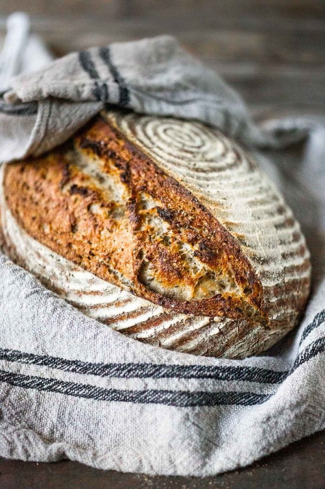

Sourdough Bread

The world's most delicious Sourdough Bread
Super easy Sourdough Bread that you can have rise overnight and bake in them morning!
This recipe yields one loaf of bread. The cook time is aproximately 13 hrs with
with a prep time of 25 min. Total time approximately 13 hrs 25 min. Bon Appetit!
Ingredients
- 4 cups or 520 grams of white bread flour
- 2 tsp or 12 grams of sea salt
- 2 cups of filtered water
- 1/3 cup or 90 grams of sourdough starter
- seeds for flavoring (any seed works ex: fennel, sesame, flax or chia seeds)
Recipe Instructions
- 8 hrs to 12 hrs before making bread dough, feed sourdough starter. Starter should double in size within 6 hours of feeding it.
- In a large bowl mix 520 grams of flour with 2 tsp of salt and preffered choice of seeds 1 to 2 tsp.
- When starter has doubled in size, stir it while adding 385 grams of water to it.
- Comine both wet and dry ingredients into a thick dough. Cover and rest the dough for about 15 minutes.
- Stretch and fold dough 2 to 3 times. Cover and let dough rest 15 minutes and repeat step.
- Cover the bowl with a wet damped towel and let dough rise over night 10 to 12 hours.
- Preheat oven to 500˚F and place dough in an oven safe bowl with parchment paper so it does not stick or burn. Spray paper with a little oil for extra lubrication.
- Score top of dough and place in oven with a lid to bake for about 20 min.
- Uncover bread and let crust form until internal temp reaches about 210˚F
- Remove bread from oven and let rest for 15min.
Top of Page
Return to Recipes